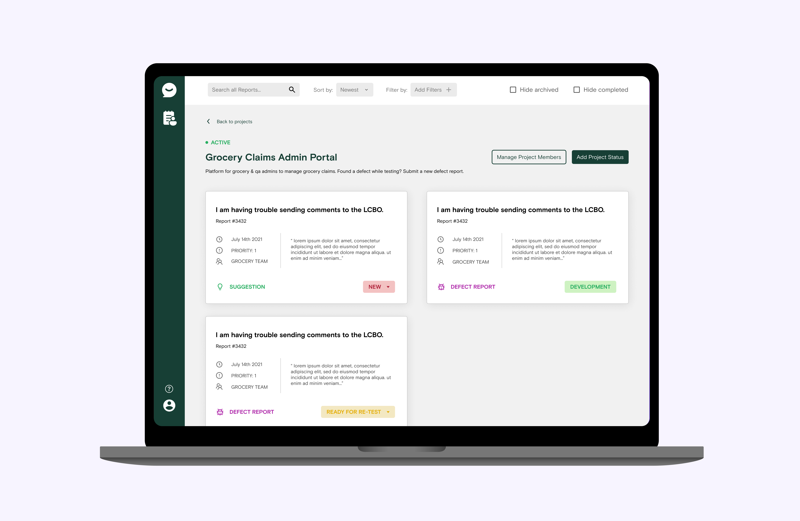
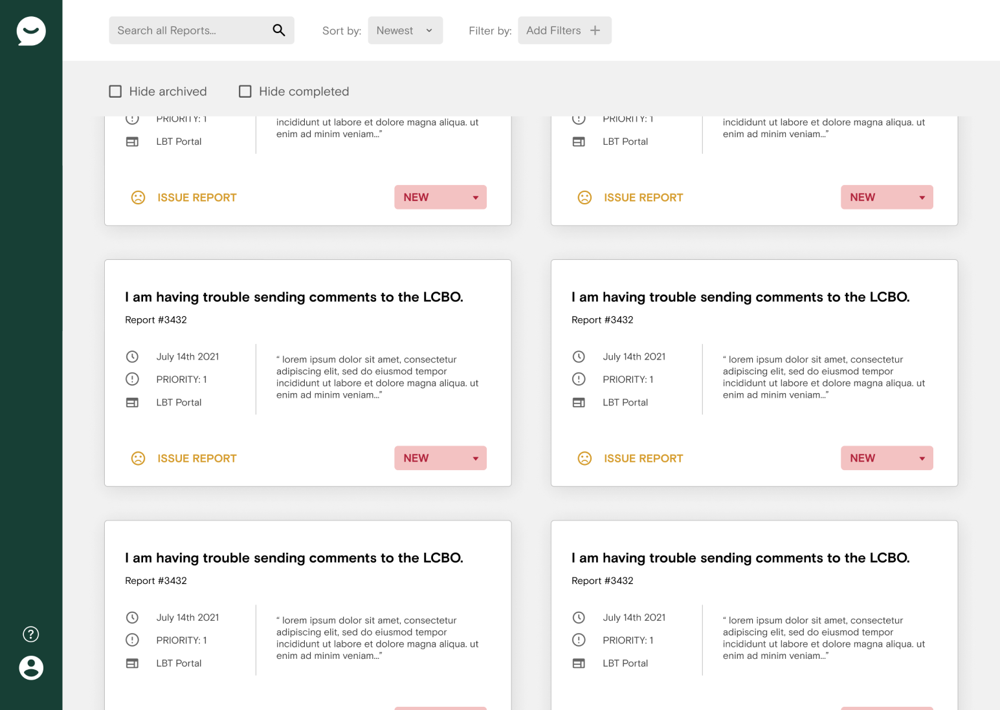
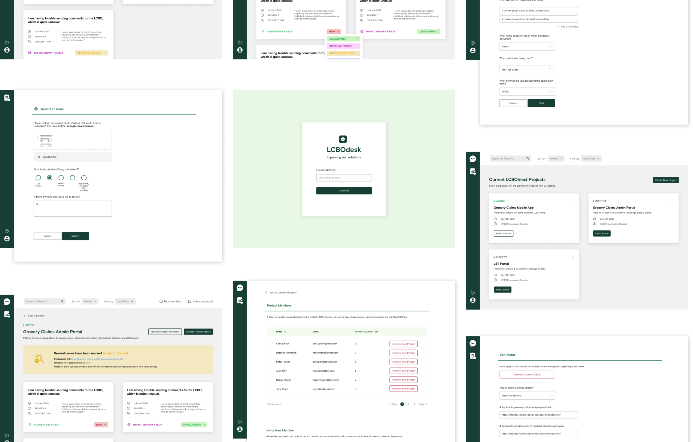
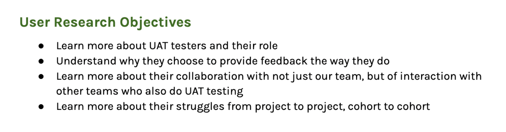
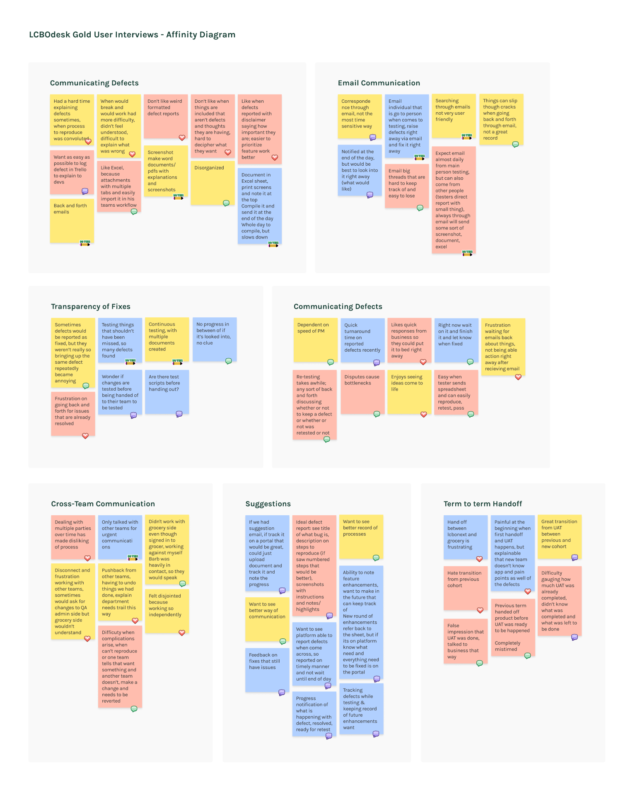
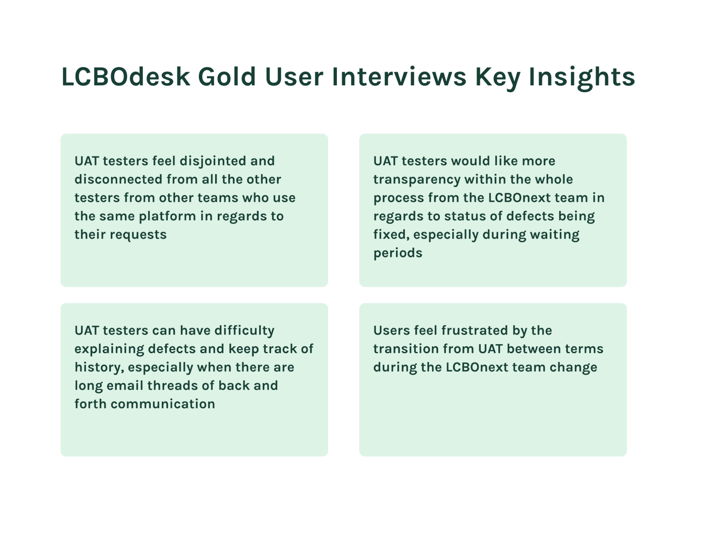
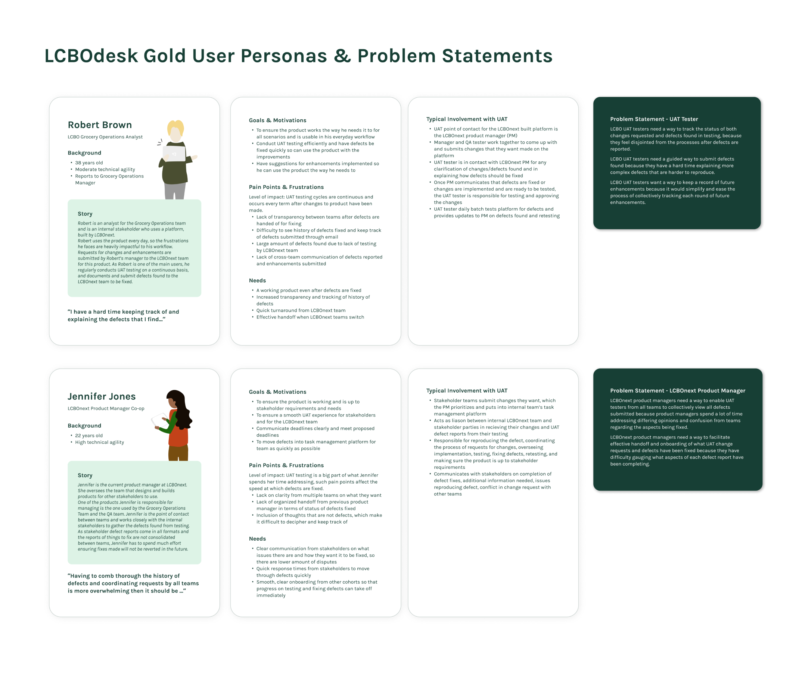
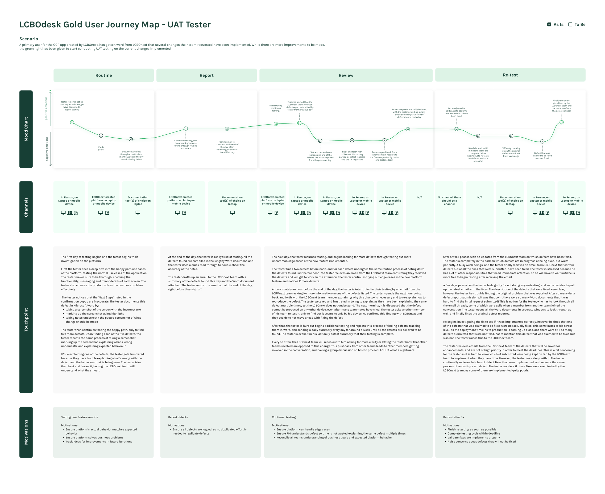
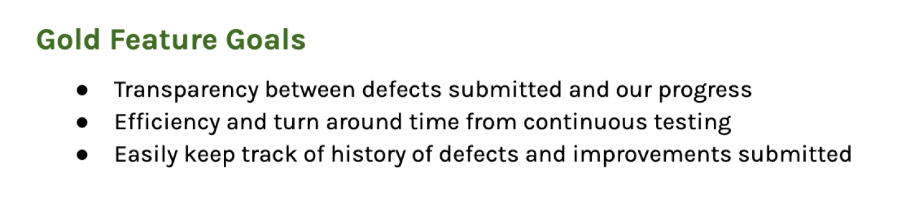
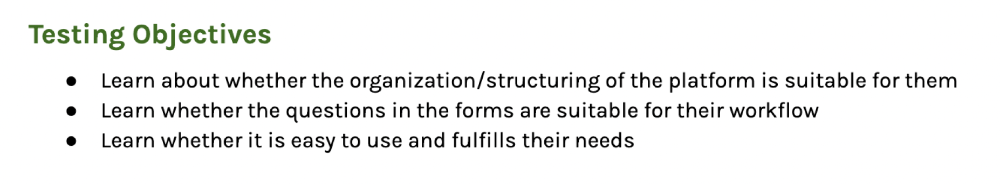

This case study has not been optimized for smaller screensizes yet! For an easier reading experience, please view on a larger screen. Stay tuned for improved mobile view!
LCBO|next internship: LCBOdesk gold
Designing 2 new LCBOdesk platform channels to help simplify the user acceptance testing process for several LCBO teams (building additional platforms to expand the original use case of LCBOdesk)

Context
During my Fall 2021 internship at LCBO|next, one of the projects I led and really enjoyed working on was LCBOdesk. The MVP of this project was in the works when I started my internship, and had been previously touched by 2 different designers across 2 different terms.
The core concept of LCBOdesk MVP (bronze phase) is to provide users of LCBO|next products a means to streamline the way they receive help. LCBOdesk essentially consists of 2 seperate platforms:
Presented in a widget, a simple questionnaire for users of live LCBO|next products to submit concerns, feedback, and suggestions
A portal counterpart where the reports submitted through the widget are centralized in one place to allow for easy monitoring, enabling the LCBO|next team to strengthen the support provided to stakeholders in a more efficient manner
What are the "Bronze", "Silver", and "Gold" phases you speak of?
At LCBOnext, all of our projects are broken out into phases, and we take our projects one phase at a time.
Bronze phase: MVP
Silver phase: Focus on improving the MVP and adding enhancements, additional functionality
Gold phase: Final product, completely flushed out and all functionality & channels completed
Where did I pick up from? What still needed to be done?
The MVP (bronze phase) as mentioned above had been almost completely designed for, with only a few small changes and screens left for me to design. Check out the case study on the LCBO|next website here to see in further detail what the state of the designs were, before I joined.
With Fall 2021, it was now up to my team to figure out where we wanted to take the product; what enhancements/functionality we wanted for the silver & gold phases of the product.
For the span of this case study, I’ll focus on the work done for the LCBOdesk Gold Phase specifically.
I won't be talking about my contributions to the Bronze (MVP) design phase, nor my work scoping and designing the Silver design phase. Feel free to reach out if you want to hear more!
The project
Noticing an additional user need for a different use case, that LCBOdesk could help with
One big part of my team’s term at LCBO|next was the UAT (user acceptance testing) testing cycles regularly done at the lab for live products. This process was quite time consuming, disorganized, and not as efficient as it could have been and was sometimes frustrating for all parties involved for a variety of reasons. With LCBOdesk’s ability to recieve reports into a portal, I realized that this product could be a great solution to help ease many of the pain points faced by key business stakeholders who test the new changes to live platforms, as well as the pain points of our team in dealing with many defect reports and communicating with multiple teams.


The process
Gaining a deeper understanding of the problems being faced
While the idea went noticed based on personal experience partaking in UAT testing cycles at the lab, it was still important to conduct user research to gain further perspective on pain points.
Users
UAT Testers: Key users from the business side of LCBO who help us with diligent testing of the enhancements and changes they request, for the products we build for them. They are avid users of the products our team builds, and provide constant feedback and improvement ideas for us to make the products better and better for their changing needs.
LCBO|next team: My team at the lab, a small group within LCBO IT Innovation
User research
I conducted 3 user interviews with both UAT testers and LCBO|next team members. A series of structured questions were asked to gain information on their background, learn about the problem space, and any thoughts they might have in regards to the solution space. Notes were taken during the interview as questions were asked.

Uncovering patterns from user research
After the interviews, key points were drawn from each of the user interview notes and were organized through affinity mapping to discover groups and themes based on relationships. They were sorted into categories, and each point was also classified as a thought, feeling, action, or something said.
Afterwards, the key insights from the user interviews were summarized even further.


Synthesizing the learnings
All the learnings from the user interviews and affinity mapping were then consolidating into 2 user personas for the main users of the LCBOdesk Gold platform; one for the UAT testers, and one for the LCBO|next PM.
Problem statements were also crafted for each persona, take a read at them below!

It was clear that the UAT tester and PM personas face quite different challenges during the UAT testing process, with the UAT testers mainly facing issues around defect reporting and explaining/viewing status of defects, while PMs struggle more with communication and organization between teams, as well as term to term handoff.
Consolidating the journey
Before moving onto ideation, a journey map for the tester was crafted as a means to dive into detail on the current journey of a UAT tester, as it was much more complex ompared to the PM journey. This was a great opportunity to be able to visual see the journey and the pain points come up in the journey, as well as have the space to list the channels and motivations within each phase of the journey. This was helpful for to look back onto when further along in designing LCBOdesk gold, in seeing how the journey would change compared to the current process or how it might fit in.

Ideation
Solving the key problems
Alot of the major problems and pain points had been discovered; it was now time to think of ways LCBOdesk can help address the problems identified and shape the solution that LCBOdesk Gold will provide.
Problem Statement
HMW alleviate this problem/pain point?
LCBO UAT testers need a way to track the status of both changes requested, and defects found in testing, because they feel disjointed from the processes after defects are reported.
Reporting the defects in formats that show as tickets, and having a status shown for each ticket
Varying level of ease for parents in signing up for an account; one tester notably kept starting the sign up process then clicking X and going back to the first sign up page and then starting and clicking the back button. Looked like tester was confused about back versus X button, appeared as though they were trying to use a back button on the Sign Up page that wasn't there.
Made sure to double check that we had the back button on all pages we needed it on, as well as the X button. Added the text "Back" to make it clearer the function of the back arrow.
LCBO UAT testers need a guided way to submit defects found because they have a hard time explaining more complex defects that are harder to reproduce.
Submit a new defect found in UAT testing through a structured form, enabling them a clearer way to get their point across and space to explain better (also for us to get what we need from the defect reported, ex. how to reproduce the defect)
LCBO UAT testers want a way to keep a record of future enhancements because it would simplify and ease the process of collectively tracking each round of future enhancements.
Ability to submit suggestions on the platform, to collect for backlog
LCBOnext product managers need a way to enable UAT testers from all teams to collectively view all defects submitted because product managers spend a lot of time addressing differing opinions and confusion from teams regarding the aspects being fixed.
Ability for all teams to view all the defeccts submitted, as well as which team submitted the defect
LCBOnext product managers need a way to facilitate effective handoff and onboarding of what UAT change requests and defects have been fixed because they have difficulty gauging what aspects of each defect report have been completing.
Through showing status of each defect and having the ability to keep track of which defects are being attended to, handoff/onboarding process will be easier for next team to see what types of defects are left to be submitted
At this point, we had a strong idea of how we were to use the concept of LCBOdesk bronze & silver, to address these new problems. We were ready to solidify the concept of LCBOdesk gold and consolidate (from a product standpoint) what we wanted to build to address the problems and challenges we've discovered
LCBOdesk Gold concept
Part #1: Building a web platform for UAT testers to submit defects and suggestions
Part #2: Expanding the LCBOdesk Admin Portal to also manage the UAT defect reports that come in
Essentially, with LCBOdesk gold we want to improve the feedback cycle between our lab and UAT testers, through enabling UAT testers from business to be able to submit and track progress of defect reports & enhancements systematically, through a web portal. This will provide structure to how they submit defects they find, convenience in all UAT related information on the portal, and increased transparency of timelines and defects being fixed.
UAT testers may be able to report defects, add photos, notes, markup screens right through the platform. They may also be able to see the links, status of defect fixes, etc. right on the platform itself.
On the LCBOdesk admin portal side, the bronze feature widget reports would still be able to be collected, however there would be a new section for UAT testing as well.

User flows
With a high level understanding of what the purpose of the gold phase would entail and what new channels were to be created, it was then time to craft user flows to shape how the product would work and how the user would move through the product. This was a helpful step to identify how the channels interrelate, and to nail down the concept and core functionality for the LCBOdesk Gold product.
Wireframing & Prototyping: Making design decisions
In beginning to wireframe and build out the product vision, many important design decisions were considered and made. Take a look at some of them below!
Design decision #1: Seperating reports by project (UAT Tester View)
4 different options were explored, in regards of how to visually show and group all the claims that come in from LCBO|next projects were created. This final option of a preliminary page of projects then clicking into each project to view tickets was chosen, because it was the least likely to overwhelm the users with all possible tickets submitted, and the less hassle in not needing to apply filters or scroll to the project they want.
With the decision to organize claims through needing to select the project first, it was important to consider how projects would be shown on the preliminary page. It was decided to have an active/inactive status on each project, to inform users and provide full transparency of which projects the lab is currently working on. It also makes it easier to find projects that need testing as well, preventing the situation of having to scroll through a list of inactive projects!
Design decision #3: Comment upon changing status (UAT Tester View)
The status on each ticket is a really big part of solving challenges faced by both users, and it was really important to take extra care in defining the interaction that occurs when changing a status, especially as it would alert others. To provide transparency and to let others know why the status is changed or to note down any thoughts, the opportunity is provided upon change to note down any important comments. Not only is this an informative way to provide thorough context and updates to teammembers, but this is also a familar pattern seen in other platforms created by LCBO|next as well.
Hi-Fidelity Designs
The uat tester portal
Building a similar portal to the LCBOdesk bronze/silver portal for admins, but intended for UAT testers to submit defect report and improvement ideas.
Enabling UAT testers to provide their reports in a structured manner, see transparency throughout the process of getting the defects fixed, and having a systematic method of organizing and referring back to previously reported defects.
Expanding the admin portal
Incorporating another tab to the LCBOdesk bronze/silver portal for admins, to seperate widget submitted feedback with UAT feedback.
Enabling the LCBO|next team to create new projects, manage users, add a general project status, view submitted reports, update status of reports, etc.
It’s time... for testing
Conducting usability testing
After creating the hi-fidelity wireframes, I wanted to get feedback from potential users. I conducted usability testing with 4 interviewees; 2 of which for UAT testers, and 2 for LCBO|next team members.

After that, it was time to prototype and seperate the prototype into the series of tasks I wanted each type of tester to attempt during the testing session. 5 tasks for each type of user were prepared, and during the session many valuable observations and insights were uncovered, such as from the questions asked.
UAT Tester usability testing findings
Testing observation
Change to be made
Like it being shown whether a project is active or inactive
Confusion on what join/leave project meant, and if you only had to join one time; active/inactive was enough
Removal of join/leave project, ability for everyone with access to Portal to view defects reported for each project, for transparency
Assumption that upon creating defect, would have to select which project the defect pertains to
Re-stating the project defect would be pertaining to, at the top of the defect reporting form
Likes seeing the timeline displayed on information, as ETA is super important to their teams
Overall metric for completion more helpful than a general status on what the general status of LCBO|next progress is
Having metrics on project information section, rather than a general status that is similar to the tickets. Emphasis on 80/80 defects completed, or an overall percentage of competion
Bigger box for comment space
Widening the modal for comment space
Asked tester about the easiest and most relevant terminology to use
“Enhancement” easier terminology to grasp, rather than “Suggestion” or “Improvement”
Would like to type into text fields, and not just select from options for certain questions; confusion on whether user has to type out numbers for steps or if they are labels
Having conversation with developers in regards to feasibility and complexity of having text boxes that have drop down select as well as the ability to type into them
Showing the generic team who submitted defect is not as helpful as being able to see the exact person who submitted it
Removing the team aspect with specific name of user who submitted defect, for transparency
Admin usability testing findings
Testing observation
Change to be made
Asked tester about the easiest and most relevant terminology to use
Change “environment link” to “development link”
Enjoys the section with the development link, as testers repeatedly lose the link and ask for it over and over again. However, development links don’t change often, would be annoying for it to go away with a change in status
Don’t like how easily status can be removed
Ensure the information on the status is accessible no matter what stage the project is in; replace status information with project information section with all the relevent links needed
Status on each ticket as well as overall status is confusing; if they’re the same thing, would feel like doubling up on statuses, which could be unnecessary
Make distinction between overall project status clearer from individual ticket statuses; make it clearer what it is and the purpose, or remove it
Enjoys the user mangement section
Tester asked questions regarding email updates that would be sent, and the frequency
One email at the end of the day summarizing all the changes of statuses made for tickets
Leaving off at the completion of testing: the close of the term
Overall, usability testing was quite successful and was actually the last deliverable I was able to complete before the term came to a close. There were alot of insights from testing and changes to be made, however I wasn’t able to be the one to complete the changes since the term closed off quite quickly. This will be a task for the next designer coming onto the lab, should they choose to implement the changes from testing insights given!
Reflecting on LCBOdesk Gold
Key Learnings
Writing product and design documentation; I wrote an addendum and all the user interview/testing documentation on my own, which was interesting!
Breaking up design work into bronze, silver and gold phases. I’ve worked with MVP and MVP enhancement phases before, but never structured like this!
Keeping version history was another key learning and very important to the longevity of the project, especially as multiple designers have and will continue to touch this project.